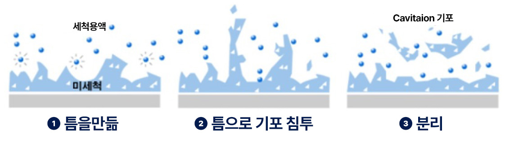
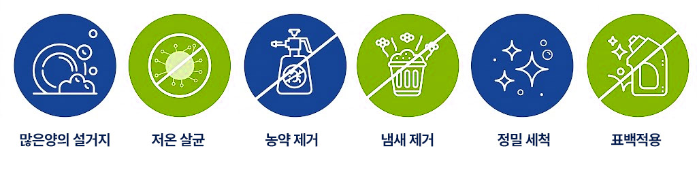
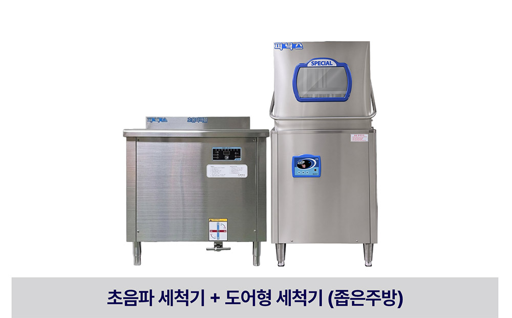
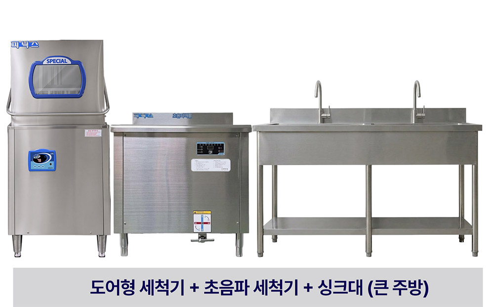
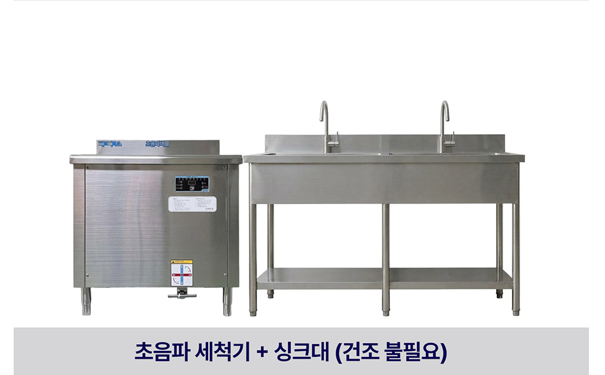
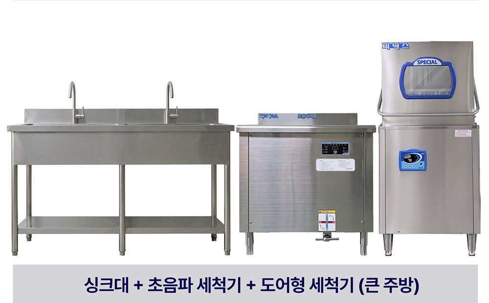

ULTRASONIC WASHER
피닉스 초음파 버블 세척기 상세 안내
미세 기포의 미세 진동과 폭발력을 이용해 보이지 않는 틈새까지 완벽하고 강력하게 정밀 세척합니다.
01 / 초음파세척기의 원리
물에 담긴 피세척물의 표면과 내부 깊숙한 보이지 않는 곳까지 초음파를 발생시키면 '캐비테이션(Cavitation)'이라 불리는 기포가 생성됩니다.

02 / 초음파세척기의 핵심 장점
많은 양의 설거지
저온 살균
농약 제거
냄새 제거
정밀 세척
표백

03 / 초음파세척기가 사용되는 곳
04 / 피닉스 초음파 세척기가 좋은 이유 (기술 특징)
01. 특허 등록 기술력
특화된 기술력을 바탕으로 인증받은 기술혁신 제품 (특허, ISO9001, KC전기안전, CE, 으뜸상품 선정)
02. 에어버블 기능
초음파와 에어버블이 동시 작동하여 세척력을 극대화
03. 맞춤 선택 기능
식기 / 채소·과일 모드 선택 가능
04. 최적화 온도 유지
세척 시 가장 효과적인 온도(40~55℃) 자동 설정 및 유지
05. 세기 조절 (1~10단계)
세척 대상물에 맞춰 초음파 강도를 10단계로 정밀 조절
06. BLUE L.E.D 조작패널
직관적이고 고급스러운 BLUE L.E.D 조작 디스플레이 적용
05 / 사용량 및 비용 절감 비교표
| 구분 | 전기 | 가스 | 수도 | 세제 | 월계 | 인건비 | 1년 총계 |
|---|---|---|---|---|---|---|---|
| 수압식 세척기 | 10만 원 | 9만 원 | 1만 5천 원 | 합성세제 15만 원 | 35만 5천 원 (연간 426만 원) |
1인 (월 180만 원) |
2,160만 원 |
| 초음파 세척기 | 1만 원 | - | 5천 원 | 친환경 활성제 5만 원 | 6만 5천 원 (연간 78만 원) |
0.5인 (월 90만 원) |
1,080만 원 |
| 절감액 | -9만 원 (1/10) | -9만 원 (1/10) | -1만 원 (1/3) | -10만 원 (1/3) | -29만 원 (연간 -348만 원) |
-90만 원 (1/2) | -1,080만 원 절감 |
06 / 주방 구조별 설치 예시 (AU9 예시)




07 / 초음파버블 세척기 크기별 사양
| 구분 | PDW5400-AU7 | PDW5400-AU9 | PDW5400-AU12 |
|---|---|---|---|
| 크기 (mm) | 700 * 710 * 980 | 900 * 710 * 980 | 1200 * 710 * 980 |
| 주파수 (Khz) | 28 Khz | ||
| 재질 | SUS 304 (고품질 스테인리스) | ||
| 세척 용량 (개/시간) | 그릇 약 1,000개 | 그릇 약 1,350개 | 그릇 약 1,800개 |
| 최대 전력 (Kw) | 2.5 Kw | ||
| 세척수 온도 (℃) | 40 ~ 55 ℃ | ||
| 수조 용량 (L) | 110 L | 140 L | 185 L |